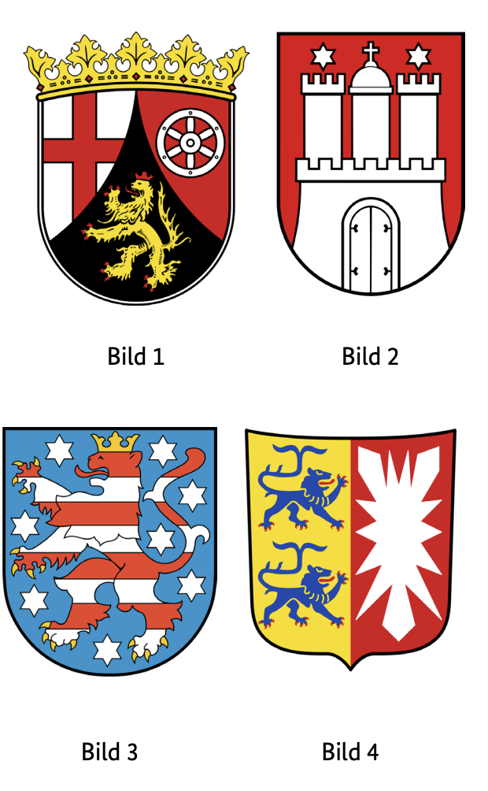
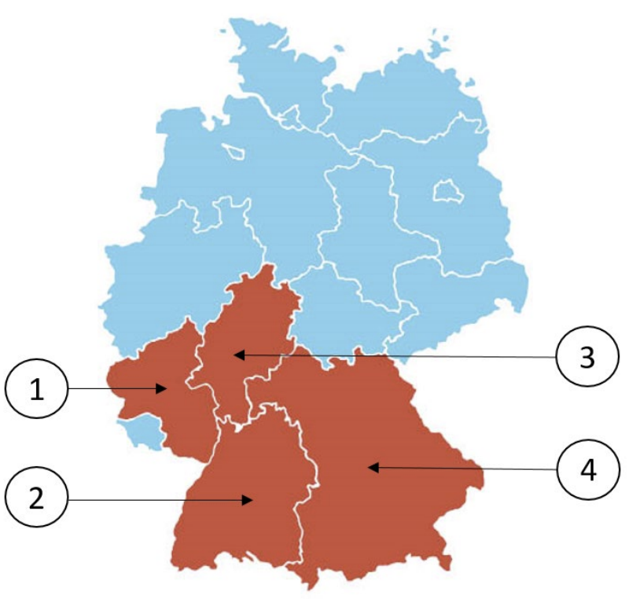

Resmi BAMF soru havuzundaki 10 Rheinland-Pfalz (RP) eyalet sorusunun Almanca ve Türkçe açıklamalı interaktif çözümleri. Soru üzerine tıklayarak bilginizi anında test edin.
Almanya vatandaşlık ve kalıcı oturum için yapılan Leben in Deutschland (LiD) sınavında adaya toplam 33 çoktan seçmeli soru sorulur:
30 Genel Soru: Demokrasi, hukuk, tarih ve toplumsal yaşam (300 genel soru havuzundan).
3 Eyalet Sorusu: İkamet ettiğiniz eyalete özel tarih, coğrafya ve anayasa soruları (Aşağıdaki 10 eyalet sorusu havuzundan).
Sınavı geçmek için 33 sorudan en az 15 doğru (Vatandaşlık şartı) veya 17 doğru (Oryantasyon kursu başarı sertifikası) yapmanız gerekmektedir.
📝 10 Resmi Rheinland-Pfalz Sorusunu Çözün
Soru #401 (1 / 10)Federal Eyalet: Rheinland-Pfalz
Welches Wappen gehört zum Bundesland Rheinland-Pfalz?
TR: Rheinland-Pfalz eyaletine ait olan arma hangisi?

✅ Doğru Cevap: Şık A (Bild 1)
Soru, Alman federal eyaletlerine ve onların resmi armalarına atıfta bulunur. Her federal eyaletin tarihi veya bölgesel öneme sahip belirli sembollere sahip kendi arması vardır. Görevde, 1'den 4'e kadar numaralı armaların birkaç illüstrasyonu gösterilmiştir. Amaç, Rheinland-Pfalz eyaletine atanmış armayı tanımak ve doğru numarayı seçmektir.
Die Frage bezieht sich auf die deutschen Bundesländer und ihre offiziellen Wappen. Jedes Bundesland hat ein eigenes Wappen mit bestimmten Symbolen, die historische oder regionale Bedeutung haben. In der Aufgabe werden mehrere Abbildungen von Wappen mit den Nummern 1 bis 4 gezeigt. Ziel ist es, das Wappen zu erkennen, das dem Bundesland Rheinland-Pfalz zugeordnet ist, und die richtige Nummer auszuwählen.
The question refers to the German federal states and their official coats of arms. Each federal state has its own coat of arms with certain symbols that have historical or regional significance. In the task, several illustrations of coats of arms with the numbers 1 to 4 are shown. The aim is to recognize the coat of arms assigned to the state of Rhineland-Palatinate and to select the correct number.
يشير السؤال إلى الولايات الفيدرالية الألمانية وشعاراتها الرسمية. لكل ولاية اتحادية شعارها الخاص مع رموز معينة لها أهمية تاريخية أو إقليمية. في هذه المهمة، تعرض عدة رسومات لشعار النبالة بأرقام من 1 إلى 4. الهدف هو الاعتراف بشعار النبالة المخصص لدولة راينلاند-بالاتينات واختيار الرقم الصحيح.
Питання стосується німецьких федеративних земель та їхніх офіційних гербів. Кожна федеральна земля має власний герб із певними символами, що мають історичне або регіональне значення. У цьому завданні показано кілька ілюстрацій гербів із цифрами від 1 до 4. Мета — визнати герб, присвоєний землі Рейнланд-Пфальц, і обрати правильний номер.
Soru #402 (2 / 10)Federal Eyalet: Rheinland-Pfalz
Welches ist ein Landkreis in Rheinland-Pfalz?
TR: Rheinland-Pfalz'da hangi bir ilçe?
✅ Doğru Cevap: Şık A (Westerwaldkreis)
Soru Alman idari yapılarıyla ilgilidir. Almanya'da federal eyaletler, kırsal bölgeler dahil olmak üzere çeşitli idari birimlere ayrılmıştır. Rheinland-Pfalz, Almanya'nın batısında yer alan federal bir eyalettir ve bu tür birkaç ilçeden oluşur. Cevap seçenekleri farklı bölgeler tarafından verilir, ancak farklı federal eyaletlerde de olabilirler. Doğru cevabı bulmak için, bahsedilen ilçelerden hangisinin aslında Rheinland-Pfalz'a ait olduğunu bilmeniz gerekir.
Die Frage bezieht sich auf deutsche Verwaltungsstrukturen. In Deutschland sind die Bundesländer in verschiedene Verwaltungseinheiten unterteilt, darunter Landkreise. Rheinland-Pfalz ist ein Bundesland im Westen Deutschlands und besteht aus mehreren solchen Landkreisen. Die Antwortmöglichkeiten nennen verschiedene Landkreise, die sich jedoch in unterschiedlichen Bundesländern befinden können. Um die richtige Antwort zu finden, muss man wissen, welcher der genannten Landkreise tatsächlich zu Rheinland-Pfalz gehört.
The question relates to German administrative structures. In Germany, the federal states are divided into various administrative units, including rural districts. Rhineland-Palatinate is a federal state in western Germany and consists of several such districts. The answer options are given by different districts, but they may be located in different federal states. In order to find the right answer, you have to know which of the districts mentioned actually belongs to Rhineland-Palatinate.
السؤال يتعلق بالهياكل الإدارية الألمانية. في ألمانيا، تنقسم الولايات الفيدرالية إلى وحدات إدارية مختلفة، بما في ذلك المناطق الريفية. راينلاند-بالاتينات هي ولاية اتحادية في غرب ألمانيا وتتكون من عدة مناطق من هذا النوع. خيارات الإجابة معطاة من قبل دوائر مختلفة، لكنها قد تقع في ولايات اتحادية مختلفة. لكي تجد الإجابة الصحيحة، عليك أن تعرف أي من المناطق المذكورة تنتمي فعلا إلى راينلاند-بالاتينات.
Питання стосується німецьких адміністративних структур. У Німеччині федеральні землі поділяються на різні адміністративні одиниці, включно з сільськими районами. Рейнланд-Пфальц — це федеральна земля на заході Німеччини, яка складається з кількох таких округів. Варіанти відповідей пропонують різні округи, але вони можуть розташовуватися в різних федеральних штатах. Щоб знайти правильну відповідь, потрібно знати, який із згаданих районів насправді належить Рейнланд-Пфальцу.
Soru #403 (3 / 10)Federal Eyalet: Rheinland-Pfalz
Für wie viele Jahre wird der Landtag in Rheinland-Pfalz gewählt?
TR: Rheinland-Pfalz'daki eyalet parlamentosu kaç yıl boyunca faaliyet gösterecek
Seçildi?
✅ Doğru Cevap: Şık C (5)
Almanya'daki hayat için önemli bir soru
Wichtige Frage für das Leben in Deutschland
Important question for life in Germany
سؤال مهم للحياة في ألمانيا
Важливе питання для життя в Німеччині
Soru #404 (4 / 10)Federal Eyalet: Rheinland-Pfalz
Ab welchem Alter darf man in Rheinland-Pfalz bei Kommunalwahlen wählen?
TR: Rheinland-Pfalz'da hangi yaştan itibaren izin verilmektedir
Yerel seçimlerde oy kullanmak mı?
✅ Doğru Cevap: Şık C (18)
Almanya'daki hayat için önemli bir soru
Wichtige Frage für das Leben in Deutschland
Important question for life in Germany
سؤال مهم للحياة في ألمانيا
Важливе питання для життя в Німеччині
Soru #405 (5 / 10)Federal Eyalet: Rheinland-Pfalz
Welche Farben hat die Landesflagge von Rheinland-Pfalz?
TR: Rheinland-Pfalz devlet bayrağı hangi renklere sahip?
✅ Doğru Cevap: Şık B (schwarz-rot-gold)
Soru, Alman federal eyaletleri ve onların ulusal amblemlerine atıfta bulunur. Rheinland-Pfalz bu federal eyaletlerden biridir ve belirli renklerde kendi eyalet bayrağı vardır. Doğru cevabı bulmak için, Almanya'daki devlet bayrakları veya devlet sembolleri hakkında temel bilgiye sahip olmak faydalıdır.
Die Frage bezieht sich auf die deutschen Bundesländer und deren Hoheitszeichen. Rheinland-Pfalz ist eines dieser Bundesländer und besitzt eine eigene Landesflagge mit bestimmten Farben. Um die richtige Antwort zu finden, hilft es, Grundkenntnisse über deutsche Landesflaggen oder allgemeines Wissen über staatliche Symbole in Deutschland zu haben.
The question refers to the German federal states and their national emblems. Rhineland-Palatinate is one of these federal states and has its own state flag with certain colors. To find the right answer, it helps to have a basic knowledge of German national flags or general knowledge of state symbols in Germany.
السؤال يتعلق بالولايات الفيدرالية الألمانية وشعاراتها الوطنية. راينلاند-بالاتينات هي واحدة من هذه الولايات الفيدرالية ولديها علم ولاية خاص بها بألوان معينة. للعثور على الإجابة الصحيحة، من المفيد أن يكون لديك معرفة أساسية بالأعلام الوطنية الألمانية أو معرفة عامة برموز الدول في ألمانيا.
Питання стосується німецьких федеративних земель та їхніх національних емблем. Рейнланд-Пфальц — одна з таких федеральних земель і має власний земельний прапор із певними кольорами. Щоб знайти правильну відповідь, корисно мати базові знання про національні прапори Німеччини або загальні знання про державні символи в Німеччині.
Soru #406 (6 / 10)Federal Eyalet: Rheinland-Pfalz
Wo können Sie sich in Rheinland-Pfalz über politische Themen informieren?
TR: Rheinland-Pfalz'da siyasi konuları nereden öğrenebilirsiniz?
?
✅ Doğru Cevap: Şık D (bei der Landeszentrale für politische Bildung)
Almanya'daki hayat için önemli bir soru
Wichtige Frage für das Leben in Deutschland
Important question for life in Germany
سؤال مهم للحياة في ألمانيا
Важливе питання для життя в Німеччині
Soru #407 (7 / 10)Federal Eyalet: Rheinland-Pfalz
Die Landeshauptstadt von Rheinland-Pfalz heißt …
TR: Renland-Pfalz eyalet başkenti ...
✅ Doğru Cevap: Şık A (Mainz)
Bu bağlamda, Alman coğrafyası ve federal eyaletlerin siyasi yapısı hakkında temel bilgilerle ilgilidir. Renland-Pfalz, Almanya'nın 16 federal eyaletinden biridir. Soru, bu federal eyaletin hükümet merkezi ve idari merkezi olarak hangi şehrin hizmet verdiği bilinip bilinmediğini inceliyor.
In diesem Zusammenhang geht es um grundlegende Kenntnisse der deutschen Geografie und der politischen Gliederung der Bundesländer. Rheinland-Pfalz ist eines der 16 Bundesländer Deutschlands. Die Frage prüft, ob bekannt ist, welche Stadt als Regierungssitz und Verwaltungszentrum dieses Bundeslandes dient.
In this context, it is about basic knowledge of German geography and the political structure of the federal states. Rhineland-Palatinate is one of the 16 federal states of Germany. The question examines whether it is known which city serves as the seat of government and administrative center of this federal state.
في هذا السياق، يتعلق الأمر بالمعرفة الأساسية بالجغرافيا الألمانية والهيكل السياسي للولايات الفيدرالية. راينلاند-بالاتينات هي واحدة من 16 ولاية اتحادية في ألمانيا. يفحص السؤال ما إذا كان معروفا أي مدينة تمثل مركز الحكومة والمركز الإداري لهذه الولاية الفيدرالية.
У цьому контексті йдеться про базові знання німецької географії та політичної структури федеративних земель. Рейнланд-Пфальц — одна з 16 федеральних земель Німеччини. Питання розглядає, чи відомо, яке місто є адміністративним центром цієї федеральної землі.
Soru #408 (8 / 10)Federal Eyalet: Rheinland-Pfalz
Welches Bundesland ist Rheinland-Pfalz?
TR: Rheinland-Pfalz hangi eyalettir?

✅ Doğru Cevap: Şık A (1)
Bu görevde, her federal eyaletin bir numarayla işaretlendiği Alman federal eyaletlerinin genel bir görünümü veya haritasına atıfta bulunur. Bu numaralandırmaya dayanarak, katılımcılar Rheinland-Pfalz eyaletine hangi numaranın atandığını belirleyebilir ve doğru seçeneği seçebilirler.
In dieser Aufgabe wird auf eine Übersicht oder Karte der deutschen Bundesländer Bezug genommen, bei der jedes Bundesland mit einer Zahl gekennzeichnet ist. Die Teilnehmenden sollen anhand dieser Nummerierung erkennen, welche Zahl dem Bundesland Rheinland-Pfalz zugeordnet ist, und die richtige Option auswählen.
In this task, reference is made to an overview or map of the German federal states, in which each federal state is marked with a number. Based on this numbering, participants should be able to identify which number is assigned to the state of Rhineland-Palatinate and select the correct option.
في هذه المهمة، يشار إلى نظرة عامة أو خريطة للولايات الفيدرالية الألمانية، حيث يتم تمييز كل ولاية اتحادية برقم. استنادا إلى هذا الترقيم، يجب أن يكون بإمكان المشاركين تحديد الرقم المخصص لولاية راينلاند-بالاتينات واختيار الخيار الصحيح.
У цьому завданні робиться посилання на огляд або карту федеральних земель Німеччини, на якій кожна федеральна земля позначається номером. На основі цієї нумерації учасники повинні мати змогу визначити, який номер присвоєний землі Рейнланд-Пфальц, і обрати правильний варіант.
Soru #409 (9 / 10)Federal Eyalet: Rheinland-Pfalz
Wie nennt man die Regierungschefin / den Regierungschef in Rheinland-Pfalz?
TR: Hükümet başkanına ne diyorsunuz?
Rhineland-Pfalz mı?
✅ Doğru Cevap: Şık D (Ministerpräsidentin / Ministerpräsident)
Welche Ministerin / welchen Minister hat Rheinland-Pfalz nicht?
TR: Rheinland-Pfalz'ın hangi bakanı var?
Değil mi?
✅ Doğru Cevap: Şık B (Außenministerin / Außenminister)
Almanya'daki hayat için önemli bir soru
Wichtige Frage für das Leben in Deutschland
Important question for life in Germany
سؤال مهم للحياة في ألمانيا
Важливе питання для життя в Німеччині
300 Genel Soruyu ve Eyalet Sorularını Eksiksiz Çalışın
DeutschLernen LiD Trainer'da tüm 310 soruyu 5 farklı dilde (Türkçe, İngilizce, Arapça, Ukraynaca, Almanca) çözebilir, deneme sınavı simülasyonu yapabilirsiniz.